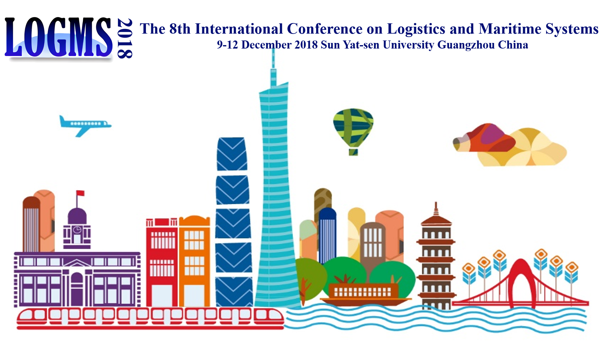

We are pleased to invite you to submit an abstract to LOGMS 2018. Submissions will be received electronically via Easychair. To submit your abstract, please log in to EasyChair using the following link: https://easychair.org/conferences/?conf=logms2018. Abstracts should contain no more than 500 words.
Acceptance or rejection will be based on the extended abstracts. No full paper will be asked for, as we want to see presentations at the conference based on new and ongoing work.
Technical Topics
All works related to theoretical developments and applications of logistics and maritime systems are welcome. Topics include (but are not limited to):
Analytics in logistics and maritime systems
Automation in container terminals
Carrier alliances and collaborative logistics
Competition and Cooperation
Data science and IT-technologies in logistics and maritime systems
Design of transportation networks
Empty container management
Environmental issues in transportation
Freight rates and markets
Industrial applications in transportation systems (air, sea, road and rail transport)
Multimodal transportation systems
Onshore transportation of containers
Optimization modeling and simulation analysis of logistics systems
Performance measures and efficiency analysis in logistics systems
Port operations
Real-time control of logistics activities in container terminals
Scheduling in logistics and maritime systems
Ship routing and fleet management
Shipping maintenance and warehouse services
Stowage plans for container vessels
Terminal design and operation
Transport planning in freight carrier networks
Vehicle routing and fleet management
Important Dates
Abstract Submission: 30 June 2018
Notification of Acceptance: 18 July 2018
Author Registration: 1 November 2018
Conference: 9 (Tutorial) & 10-12 December 2018
Conference Chairs
Prof. Fan Wang
Business School, Sun Yat-sen University,